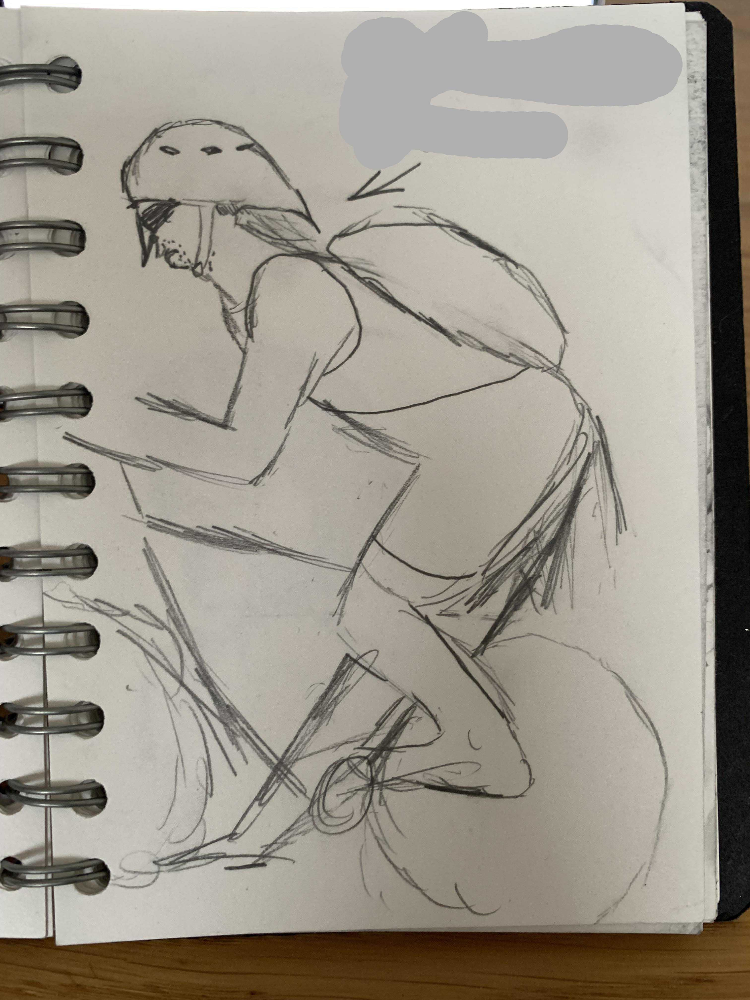
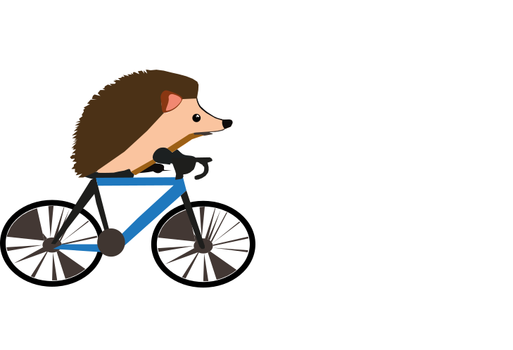
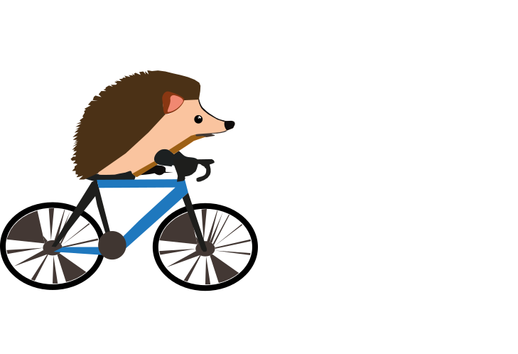

Tema 4
Temaet animation fokuserede på interaktivitet og visuelle userinterface indikatorer ved brug af javascript. Målet for temaet var at udvikle et eget spil inden for simple rammer. Spillet skulle indkorpurere selv-designede UI-elemter, som kunne interegeres med.
'Nørrebro Renovation' er mit projekt for Tema 4 animation. Spillet går ud på holde 'djævlerne' væk fra pindsvinene og nørrebrogade
Skitse
Sprites
Bouba versus kiki
 
